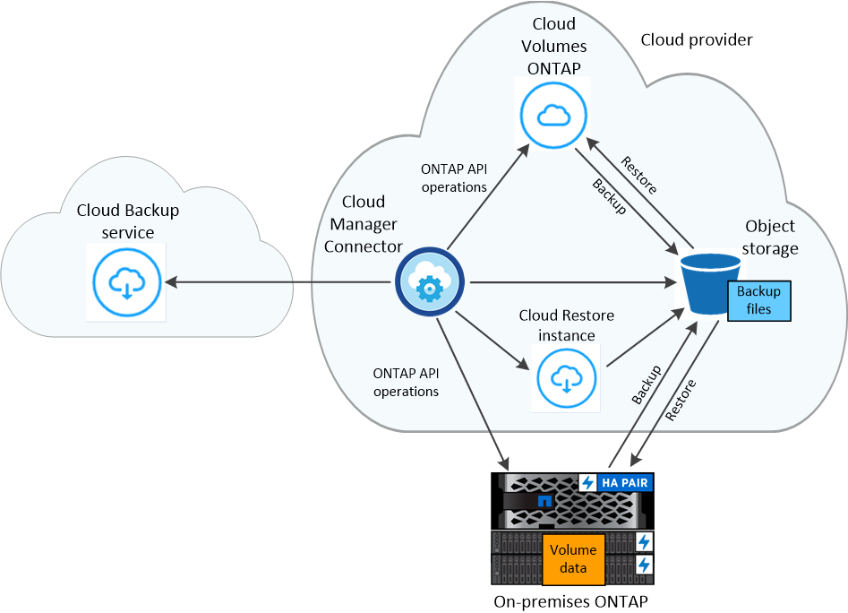

Cloud Backup の詳細をご確認ください
Cloud Backup は、 ONTAP クラスタとオンプレミスの Cloud Volumes ONTAP クラスタに対応するサービスで、保護のためのバックアップとリストア機能を提供し、データの長期アーカイブを実現します。バックアップは、ほぼ期間のリカバリやクローニングに使用されるボリューム Snapshot コピーとは関係なく、パブリックまたはプライベートのクラウドアカウントのオブジェクトストアに自動的に生成されて格納されます。
必要に応じて、同じ Cloud Volumes ONTAP クラスタまたはオンプレミスの ONTAP クラスタに、 volume_全体 、または 1 つ以上の _files をバックアップからリストアできます。
の機能
-
データボリュームの独立したコピーを低コストのオブジェクトストレージにバックアップできます。
-
クラウドからクラウドへ、オンプレミスの ONTAP システムからパブリッククラウドやプライベートクラウドへバックアップできます。
-
バックアップデータは、転送中の AES-256 ビット暗号化と TLS 1.2 HTTPS 接続によって保護されます。
-
単一ボリュームで最大 4 、 000 個のバックアップがサポートされます。
-
バックアップは、 Cloud Volumes ONTAP システムと同じリージョンまたは異なるリージョンに保存できます。
-
特定の時点からデータをリストアします。
-
ボリュームまたは個々のファイルをソースシステムまたは別のシステムにリストアする。
-
単一ファイルのリストアに使用できる参照可能なファイルカタログです。
サポートされている作業環境とオブジェクトストレージプロバイダ
Cloud Backup では、次の作業環境から次のクラウドプロバイダのオブジェクトストレージにボリュームをバックアップできます。
| ソースの作業環境 | バックアップファイルの保存先 |
|---|---|
AWS の Cloud Volumes ONTAP |
Amazon S3 |
Azure の Cloud Volumes ONTAP |
Azure Blob の略 |
Google の Cloud Volumes ONTAP |
Google クラウドストレージ |
オンプレミスの ONTAP システム |
Amazon S3 Azure Blob Google Cloud Storage NetApp StorageGRID |
ボリュームまたは個々のファイルをバックアップファイルから次の作業環境にリストアできます。
| バックアップファイルの場所 | デスティネーションの作業環境 | |
|---|---|---|
* ボリュームの復元 * |
* ファイルの復元 * |
|
Amazon S3 |
オンプレミスの AWS ONTAP システムに Cloud Volumes ONTAP が導入されている |
オンプレミスの AWS ONTAP システムに Cloud Volumes ONTAP が導入されている |
Azure Blob の略 |
オンプレミスの Azure ONTAP システムに Cloud Volumes ONTAP を導入 |
オンプレミスの Azure ONTAP システムに Cloud Volumes ONTAP を導入 |
Google クラウドストレージ |
Google オンプレミス ONTAP システムの Cloud Volumes ONTAP |
|
NetApp StorageGRID |
オンプレミスの ONTAP システム |
|
コスト
Cloud Backup の使用に関連するコストには、リソース料金とサービス料金の 2 種類があります。
-
リソース料金 *
リソースの料金は、ストレージやクラウドで仮想マシン / インスタンスを実行するためにクラウドプロバイダに支払われます。
-
バックアップでは、クラウドプロバイダにオブジェクトストレージのコストを支払います。（ StorageGRID システムでバックアップを作成する場合、ストレージコストは発生しません）。
クラウドバックアップではソースボリュームの Storage Efficiency が保持されるため、クラウドプロバイダ側で、 data_after_ONTAP 効率化のコストを支払います（重複排除と圧縮が適用されたあとのデータ量が少ないほど）。
-
ファイルのリストアの場合、クラウドプロバイダに料金を支払うのは、リストアインスタンスの実行中のみです。
インスタンスは、バックアップファイルを参照してリストアする個々のファイルを探すときにのみ実行されます。コストを節約するために使用していない場合、インスタンスはオフになります。個々のファイルを復元しようとしなかった場合は、まったく展開されません。
を参照してください "導入されている仮想マシン / インスタンスのタイプ" サポートされているクラウドプロバイダごとに、
-
ボリュームリストアを実行する場合、インスタンスや仮想マシンを個別に用意する必要がないため、コストは発生しません。
-
サービス料金 *
バックアップサービスの料金はネットアップに支払われ、バックアップの作成時のバックアップとリストア時のボリューム、またはファイルに対する費用の両方が含まれます。お客様は、保護対象のデータについてのみ料金を支払うことになります。この料金は、ターゲットバックアップの容量である _Before_ONTAP の効率性で計算されます。
バックアップサービスの料金を支払う方法は 2 つあります。1 つ目の方法はサービスプロバイダから登録することです。サービスプロバイダを利用すると、バックアップデータの量に基づいて月単位の料金を支払うことができます。2 つ目の選択肢は、ネットアップから直接ライセンスを購入することです。を参照してください ライセンス 詳細については、を参照してください
ライセンス
Cloud Backup には、お客様所有のライセンスを使用（ BYOL ）と従量課金制（ PAYGO ）の 2 つのライセンスオプションがあります。ライセンスをお持ちでない場合は、 30 日間の無償トライアルをご利用いただけます。
無償トライアルをご利用ください
30 日間の無償トライアルを使用すると、残りの無料試用日数が通知されます。無償トライアルが終了すると、バックアップは作成されなくなります。サービスを引き続き使用するには、サービスに登録するかライセンスを購入する必要があります。
サービスが無効になってもバックアップは削除されません。バックアップを削除しないかぎり、バックアップで使用する容量のオブジェクトストレージのコストは引き続きクラウドプロバイダから請求されます。
従量課金制のサブスクリプション
PAYGO の場合は、（前述のとおり）オブジェクトストレージのコストについてクラウドプロバイダに支払い、バックアップライセンスのコストについてはネットアップに支払う必要があります。ライセンスコストは、（ ONTAP の Storage Efficiency 機能を使用する前の）ターゲットのバックアップ容量に基づいて決まります。
お客様所有のライセンスを使用
BYOL は、期間ベース（ 1 年間 / 2 年間 / 3 年間）で容量ベースであり、バックアップされた容量を（ ONTAP Storage Efficiency の前の）論理的なバックアップに基づいて、 1TB 単位で増分されます。ネットアップに料金を支払うことで、このサービスを一定期間（たとえば 1 年）利用でき、最大バックアップ容量である 10TB にしたとします。その場合、オブジェクトストレージのコストについてクラウドプロバイダの支払いが必要になります（前述した金額をクラウドプロバイダに支払う必要があります）。
| StorageGRID へのバックアップには BYOL ライセンスが必要です。この場合、クラウドプロバイダのストレージスペースは無償で利用できます。 |
このサービスを有効にするために、 Cloud Manager のライセンスページに入力するシリアル番号が表示されます。いずれかの制限に達すると、ライセンスを更新する必要があります。を参照してください "バックアップ BYOL ライセンスを追加および更新する"。バックアップライセンスはすべての Cloud Volumes ONTAP に適用されます に関連付けられているオンプレミスシステムもサポートします "Cloud Central アカウント"。
BYOL ライセンスに関する考慮事項
Cloud Backup BYOL ライセンスを使用している場合、 Cloud Manager はバックアップが容量の上限に近づいたときやライセンスの有効期限に近づいたときに通知します。次の通知が表示されます。
-
バックアップがライセンスで許可された容量の 80% に達したとき、および制限に達したときに再度実行されます
-
ライセンスの有効期限が切れる 30 日前と、ライセンスの有効期限が切れたあとに再度有効になります
これらの通知を受け取った場合は、 Cloud Manager インターフェイスの右下にあるチャットアイコンを使用してライセンスを更新してください。
ライセンスの有効期限が切れると、次の 2 つのことが起こります。
-
ONTAP システムに使用しているアカウントにマーケットプレイスアカウントがある場合、バックアップサービスは引き続き実行されますが、 PAYGO ライセンスモデルに切り替えられます。バックアップに使用する容量のバックアップライセンスのコストについては、クラウドプロバイダに課金されます。バックアップに必要なストレージコストについては、ネットアップにお問い合わせください。
-
ONTAP システムに使用しているアカウントに Marketplace アカウントがない場合、バックアップサービスは引き続き実行されますが、有効期限に関するメッセージは引き続き送信されます。
BYOL サブスクリプションを更新すると、 Cloud Manager は NetApp から新しいライセンスを自動的に取得してインストールします。Cloud Manager がセキュアなインターネット接続経由でライセンスファイルにアクセスできない場合は、ユーザがファイルを取得して、 Cloud Manager に手動でアップロードできます。手順については、を参照してください "バックアップ BYOL ライセンスを追加および更新する"。
PAYGO ライセンスに切り替えられたシステムは、自動的に BYOL ライセンスに戻されます。また、ライセンスなしで実行されていたシステムは警告メッセージの受信を停止し、ライセンスの有効期限が切れている間に実行されたバックアップに対して課金されます。
Cloud Backup の仕組み
Cloud Volumes ONTAP またはオンプレミスの ONTAP システムでクラウドバックアップを有効にすると、サービスはデータのフルバックアップを実行します。ボリューム Snapshot はバックアップイメージに含まれません。初期バックアップ後は、追加のバックアップはすべて差分になります。つまり、変更されたブロックと新しいブロックのみがバックアップされます。これにより、ネットワークトラフィックを最小限に抑えることができます。
ほとんどの場合、すべてのバックアップおよびリストア処理に Cloud Manager を使用します。ただし、 ONTAP 9.9.1 以降では、 ONTAP System Manager を使用して、オンプレミスの ONTAP クラスタのボリュームバックアップ処理を開始できます。 "Cloud Backup を使用してボリュームをクラウドにバックアップする方法については、 System Manager の説明を参照してください。"
| クラウドプロバイダから直接バックアップファイルの管理操作を実行した場合、サポートされない構成になります。 |
次の図は、各コンポーネント間の関係を示しています。

バックアップの保管場所バックアップノバショ
バックアップコピーは、 Cloud Manager がクラウドアカウントで作成するオブジェクトストアに格納されます。このリージョンは、サービスを有効にするときに指定します。
Cloud Volumes ONTAP システムまたはオンプレミスの ONTAP システムごとに 1 つのオブジェクトストアがあります。Cloud Manager は、次のようにオブジェクトストア名を指定します。 NetApp-backup- _clusteruuid_このオブジェクトストアは削除しないでください。
-
AWS では、 Cloud Manager によってが有効になります "Amazon S3 ブロックのパブリックアクセス機能" を S3 バケットに配置します。
-
Azure では、 Cloud Manager は BLOB コンテナのストレージアカウントを持つ新規または既存のリソースグループを使用します。
-
GCP では、 Cloud Manager は Google Cloud Storage バケット用のストレージアカウントを持つ新規または既存のプロジェクトを使用します。
-
StorageGRID では、 Cloud Manager はオブジェクトストアバケットに既存のストレージアカウントを使用します。
サポートされるストレージクラスまたはアクセス階層
-
AWS では、バックアップは _Standard_storage クラスから開始し、 30 日後に _Standard-Infrequent Access_storage クラスに移行します。
-
Azure では、バックアップは _COOL アクセス層に関連付けられます。
-
GCP では、バックアップはデフォルトで _Standard_storage クラスに関連付けられています。
また、 lower cost_Nearline_storage クラスまたは _Coldline_or_Archive_storage クラスを使用することもできます。Google のトピックを参照してください "ストレージクラス" ストレージクラスの変更については、を参照してください。
-
StorageGRID では、バックアップは _Standard_storage クラスに関連付けられます。
バックアップ設定はシステム全体に適用されます
Cloud Backup を有効にすると、システムに指定したすべてのボリュームがクラウドにバックアップされます。
保持するバックアップのスケジュールと数はシステムレベルで定義されます。バックアップ設定は、システム上のすべてのボリュームに適用されます。
スケジュールは、 daily 、 weekly 、 monthly 、またはその組み合わせです
すべてのボリュームについて、日単位、週単位、月単位のバックアップを組み合わせて選択できます。また、システム定義のポリシーの中から、 3 カ月、 1 年、 7 年のバックアップと保持を提供するポリシーを選択することもできます。ポリシーは次のとおりです。
| バックアップポリシー名 | 間隔ごとのバックアップ … | 最大バックアップ | ||
|---|---|---|---|---|
* 毎日 * |
* 毎週 * |
* 毎月 * |
||
Netapp3MonthsRetention |
30 |
13 |
3. |
46 |
Netapp1YearRetention |
30 |
13 |
12. |
55 |
ネッパ7YearsRetention |
30 |
53 |
84 |
167 |
ONTAP System Manager または ONTAP CLI を使用してシステムに作成したバックアップ保護ポリシーも選択可能です。
カテゴリまたは間隔のバックアップの最大数に達すると、古いバックアップは削除されるため、常に最新のバックアップが保持されます。
データ保護ボリュームのバックアップの保持期間は、ソースの SnapMirror 関係の定義と同じになります。API を使用して必要に応じてこの値を変更できます。
バックアップは午前 0 時に作成されます
-
日次バックアップは、毎日午前 0 時を過ぎた直後に開始されます。
-
週次バックアップは、日曜日の朝の午前 0 時を過ぎた直後に開始されます
-
月単位のバックアップは、毎月 1 日の午前 0 時を過ぎた直後に開始されます。
開始時間は、各ソース ONTAP システムで設定されているタイムゾーンに基づきます。これで、ユーザが指定した時刻にバックアップ操作をスケジュールすることはできません。
バックアップコピーは Cloud Central アカウントに関連付けられます
バックアップコピーはに関連付けられます "Cloud Central アカウント" Cloud Manager が配置されます。
同じ Cloud Central アカウントに複数の Cloud Manager システムがある場合、各 Cloud Manager システムには同じバックアップのリストが表示されます。これには、他の Cloud Manager システムの Cloud Volumes ONTAP インスタンスとオンプレミス ONTAP インスタンスに関連付けられたバックアップが含まれます。
サポートされるボリューム
Cloud Backup は、 FlexVol の読み書き可能ボリュームとデータ保護（ DP ）ボリュームをサポートしています。
FlexGroup ボリュームと SnapLock ボリュームは現在サポートされていません。
FabricPool 階層化ポリシーに関する考慮事項
バックアップするボリュームが FabricPool アグリゲートに配置され、「 none 」以外のポリシーが割り当てられている場合に注意する必要がある点があります。
-
FabricPool 階層化ボリュームの最初のバックアップでは、（オブジェクトストアからの）ローカルおよびすべての階層化データをすべて取得する必要があります。この処理を実行すると、クラウドプロバイダからデータを読み取るコストが 1 回だけ増加する可能性があります。
-
2 回目以降のバックアップは増分バックアップとなるため、影響はありません。
-
ボリュームの作成時に階層化ポリシーが割り当てられていた場合、この問題は表示されません。
-
-
ボリュームに「 all 」階層化ポリシーを割り当てる前に、バックアップの影響を考慮してください。データはすぐに階層化されるため、 Cloud Backup はローカル階層からではなくクラウド階層からデータを読み取ります。バックアップの同時処理は、クラウドオブジェクトストレージへのネットワークリンクを共有するため、ネットワークリソースが最大限まで使用されなくなった場合にパフォーマンスが低下する可能性があります。この場合、複数のネットワークインターフェイス（ LIF ）をプロアクティブに設定して、この種類のネットワークの飽和を軽減することができます。
-
バックアップ処理では、オブジェクトストレージに階層化されたコールドデータは「再加熱」されません。
制限
-
オンプレミスの ONTAP システムからパブリッククラウドストレージへバックアップする場合は、コネクタをクラウドに導入する必要があります。
-
オンプレミスの ONTAP システムから StorageGRID （プライベートクラウド）にバックアップする場合は、 Connector をオンプレミスに導入する必要があります。
-
DP ボリュームをバックアップする場合は、次の点に注意してください。
-
バックアップ / MirrorAndVault 関係のデスティネーションである DP ボリュームのみがサポートされます。MirrorAllSnapshots ポリシーを使用して作成した DP ボリュームはバックアップできず、エラーが発生して失敗します。
-
ソースボリュームの SnapMirror ポリシーに対して定義されたルールでは、許可される Cloud Backup ポリシーの名前（ * daily * 、 * weekly * 、または * monthly * ）に一致するラベルを使用する必要があります。そうしないと、その DP ボリュームのバックアップは失敗します。
-
-
Azure では、 Cloud Volumes ONTAP の導入時に Cloud Backup を有効にすると、 Cloud Manager によってリソースグループが作成されます。このリソースグループは変更できません。Cloud Backup を有効にする際に独自のリソースグループを選択する場合は、 Cloud Volumes ONTAP を導入する際に * Cloud Backup を無効にしてから、 Cloud Backup を有効にして、 Cloud Backup の設定ページからリソースグループを選択します。
-
Cloud Volumes ONTAP システムからボリュームをバックアップする場合、 Cloud Manager 以外で作成したボリュームは自動ではバックアップされません。たとえば、 ONTAP CLI 、 ONTAP API 、または System Manager からボリュームを作成した場合、そのボリュームは自動的にはバックアップされません。これらのボリュームをバックアップするには、 Cloud Backup を無効にしてから再度有効にする必要があります。
-
オブジェクトストレージからの ILM （階層化）、 AWS Glacier または同等の下位階層のオブジェクトストレージへの直接書き込みはサポートされていません。
-
SVM-DR 構成と SM-BC 構成はサポートされません。
-
MetroCluster （ MCC ）バックアップは、 ONTAP セカンダリからのみサポートされます。 MCC>SnapMirror > ONTAP > Cloud Backup Service > オブジェクトストレージ。
-
オブジェクトストアでの Worm/Compliance モードはサポートされません。
単一ファイルのリストアに関する制限事項
-
単一ファイルのリストアでは、個々のファイルをリストアできます。現在、フォルダ / ディレクトリのリストアはサポートされていません。
-
リストアするファイルは、デスティネーションボリュームの言語と同じ言語を使用している必要があります。言語が異なる場合は、エラーメッセージが表示されます。
-
AWS のクロスアカウントリストアでは、クラウドプロバイダコンソールで手動の操作が必要になります。を参照してください "クロスアカウントバケットの権限を付与しています" を参照してください。
-
異なるサブネットにある異なる Cloud Manager で同じアカウントを使用する場合、単一ファイルのリストアはサポートされません。
-
リストアでは、最大 30,000 個のフラットファイルを含む 1 つのディレクトリを参照できます。現時点では、これよりも大きいディレクトリは UI の使用時にはサポートされません。
 GitHub で編集
GitHub で編集